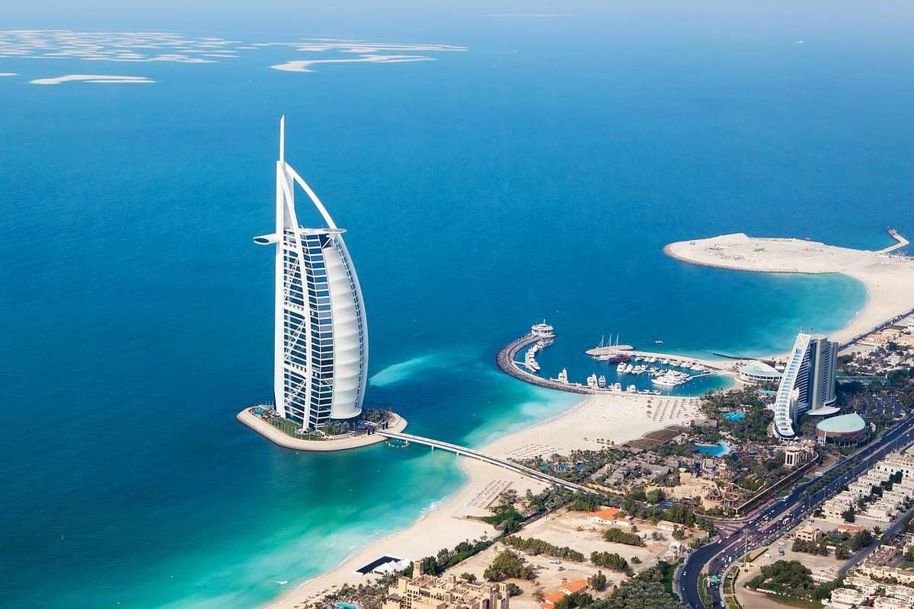
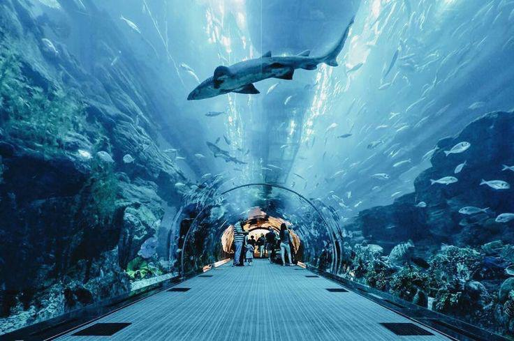
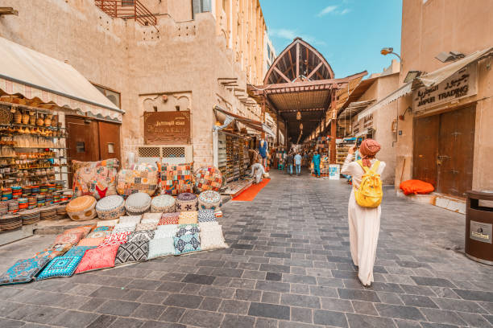
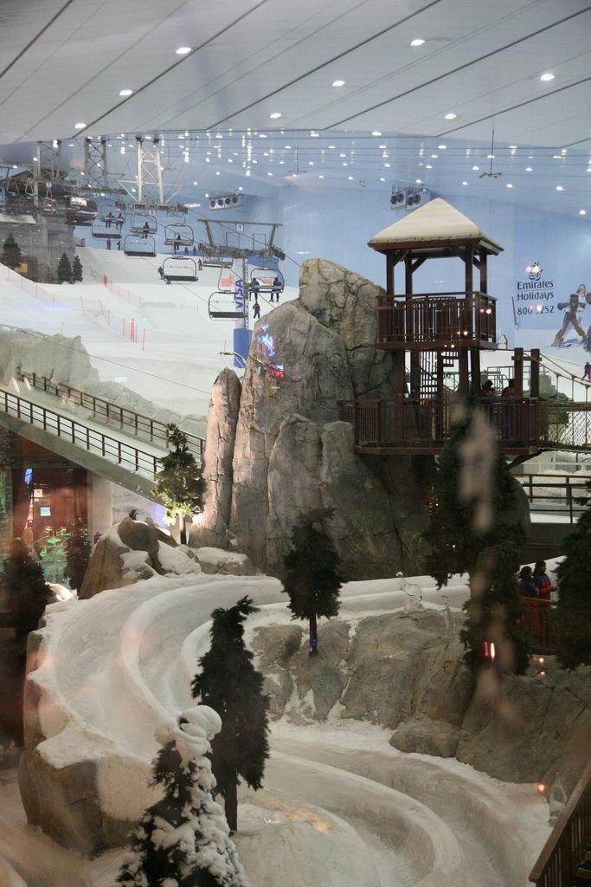
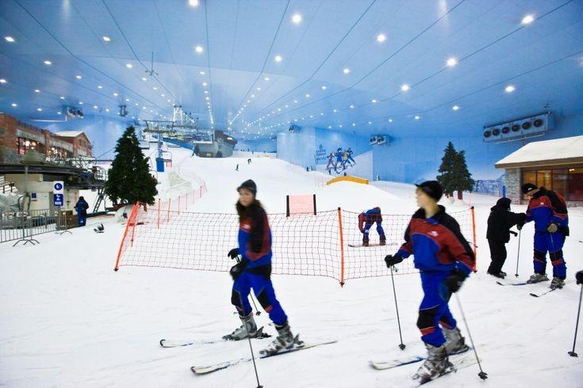
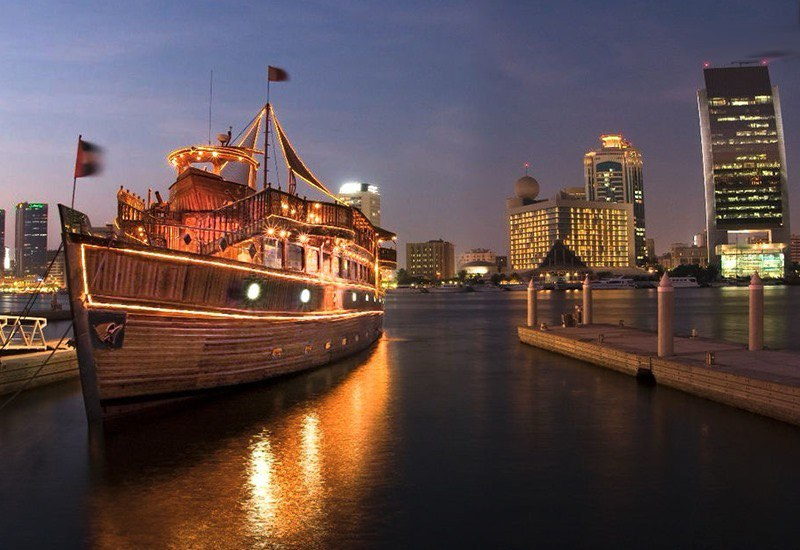
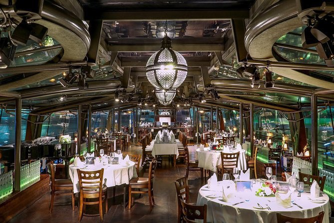
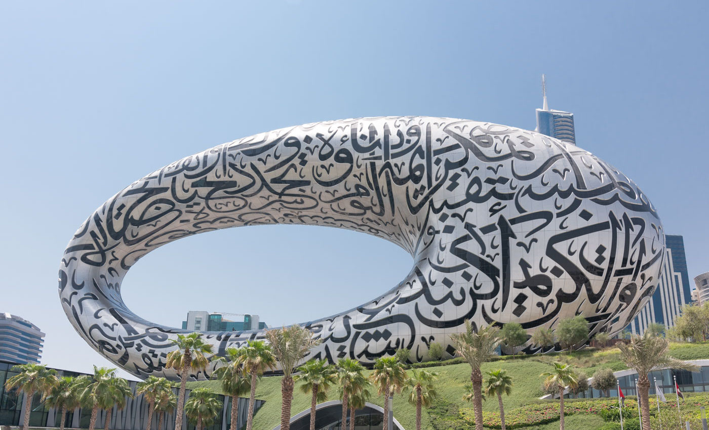

Dubaï
Avec ses buildings futuristes surgis du désert, ses îles artificielles, ses malls toujours plus grands, ses hôtels de luxe dernier cri et ses projets plus fous les uns que les autres, Dubaï incarne à sa manière le nouveau rêve arabe.
Carrefour entre l’Orient et l’Occident, hub de la compagnie Emirates, le deuxième plus grand émirat des Émirats arabes unis joue la carte de la démesure sur la scène touristique mondiale. Autrefois désert aride peuplé de Bédouins et petit port de pêche réputé pour ses perles, l’émirat de Dubaï, aujourd’hui en plein boom économique et immobilier, est devenu au tournant du XXIe siècle un pays dynamique. L’argent du pétrole coule ici à flots, à l’origine d’un développement spectaculaire où high tech et consommation bling bling voisinent avec un conservatisme social et religieux des plus rigides, mais aussi des conditions de travail déplorables pour certains ouvriers immigrés.
Dubaï est la ville des superlatifs et des mille et une folies, où tout semble possible pour épater le chaland. Architectes, décorateurs et entrepreneurs du monde entier s’en donnent à cœur joie allant jusqu'à oublier le respect de l'environnement naturel : station de ski en plein désert, restaurants à perte de vue, tour la plus haute du monde, îles artificielles en forme de planète, hôtel sous-marin immergé au large des côtes… On aime ou on déteste.
En chantier permanent, débordante d’énergie, Dubaï semble ne devoir jamais s’arrêter. L’objectif affiché est de devenir le Hong Kong arabe de demain avec les paillettes de Las Vegas.
Ensoleillée toute l’année, située entre le désert et la mer chaude du golfe d’Arabie, Dubaï est aussi appréciée pour ses plages de sable fin, son soleil hivernal et les virées en quad ou 4x4 dans les dunes de sable.
Dubaï est une ville rempli de belle endroit à visiter et aussi un endroit pour faire les magasins

Burj Khalifa
Plus haute tour au monde, le Burj Khalifa est une icône mondiale. Véritable exploit d'ingénierie, ce bâtiment est le cœur et l'âme de la ville de Dubai.
Culminant à 828m de haut, cette magnifique structure est située à côté du Dubai Mall et attire les visiteurs du monde entier depuis son ouverture en 2010. Les vues inégalées qu'offre le Burj Khalifa peuvent être admirées depuis le pont d'observation à deux niveaux d'At the Top aux 124e et 125e étages, ou encore depuis le plus haut pont d'observation du monde (555m) au 148e étage.
zLes visiteurs à la recherche d'un moment vraiment spécial peuvent opter pour un dîner dans le restaurant et lounge At.mosphere, situé au 122e étage, ou atteindre de nouveaux sommets à The Lounge, Burj Khalifa, qui occupe les étages 152, 153 et 154.
Le design de cette tour gigantesque est une abstraction de la fleur hymenocallis et possède une empreinte à trois lobes (une structure circulaire triple s'élevant depuis son noyau central). Vu du ciel, le Burj Khalifa ressemble aux dômes fréquemment présents dans l'architecture islamique, une ode moderne, donc, au patrimoine local. Autour de sa base, on y trouvere un quartier animé mêlant lieux de divertissement et restaurants. on y découvrire notamment le Dubai Mall, le spectacle de la Dubai Fountain et pléthore d'attractions touristiques qui sauront vous émerveiller.
Les billets pour At the Top, Burj Khalifa débutent à 159 AED. Cependant, si vous voulez profiter d'une expérience vraiment mémorable, il est recommandé d'opter pour le menu à trois services proposé au Burj Club, avec accès au rooftop, pour 259 AED. Sinon, il y'a aussi une visite de la fontaine pour 20 AED, ce qui permet de profiter de vues à couper le souffle sur le Burj Khalifa « by night ».
Le Burj Khalifa compte deux belvédères qui proposent des vues surprenantes. Au 124e étage, situé à 442 mètres de haut, vous trouverez celui qui était jusqu’alors l’unique belvédère de la Tour Khalifa. Il s’agit sans aucun doute du meilleur point de vue de tout Dubaï pour contempler la ville.
Le deuxième belvédère, récemment inauguré, attire désormais tous les regards depuis qu’il est devenu le plus élevé du monde (devant la Tour de Canton à Guangzhou). Situé à 555 mètres de haut, le belvédère se trouve au 148ème étage et propose de surprenantes vues où l’on peut découvrir la ville en miniature.
Vous devez savoir que les tickets s’épuisent généralement en avance. Il est donc recommandé d’acheter le ticket en ligne sur son site internet officiel le plus tôt possible. Si vous ne souhaitez pas vous compliquer la tâche, vous pouvez réserver l'expérience sur notre site, elle inclut la prise en charge à l'hôtel et l'entrée rapide au Burj Khalifa.
La meilleure heure pour y monter et la plus demandée est celle du coucher de soleil. Si vous ne pouvez pas acheter d’entrées pour cette heure-ci, il faut savoir que la vue est plus belle de jour que de nuit puisque Dubaï n’est pas particulièrement prisée pour ses illuminations nocturnes.

Burj Al Arab Jumeirah
Le Burj al-Arab (برج العرب « Tour des arabes » en arabe) est un hôtel proclamé « sept étoiles » par certains journalistes1, situé à Dubaï, aux Émirats arabes unis. Mesurant 321 mètres, il était, jusqu’en 2007, l'édifice utilisé exclusivement comme un hôtel le plus élevé (le plus haut est désormais le JW Marriott Marquis, également à Dubaï). Il est particulièrement reconnaissable à sa forme de voile géante. Conçu en 1993 par l’architecte Tom Wright2, il est construit sur une île artificielle du golfe Persique.La « Tour des Arabes » est l'un des hôtels les plus luxueux au monde et l'une des icônes les plus représentatives du paysage urbain de Dubai. il est également devenu un des symboles les plus célèbres de l'architecture contemporaine3.
L'hôtel a été construit par la compagnie de construction sud-africaine Murray & Roberts. Le mur extérieur de l'atrium faisant face à la plage est fait de tissus isolants en fibre de verre recouverts d'une couche de teflon pour les protéger de l'usure due aux vents des sables venant du désert.
L'immeuble mesure 321 mètres de hauteur, il dépasse de peu la Tour Eiffel. Pourtant il ne compte que 28 étages. Chaque étage abrite des suites de luxe.Le volume de l'atrium peut contenir le World Trade Center de Dubaï (en), qui, à 38 étages, était le plus haut édifice à Dubaï de la fin des années 1970 à la fin des années 1990. Il a été construit de telle façon que son ombre ne recouvre pas la plage. Un héliport (qui sert parfois aussi de terrain de tennis), ainsi qu'un restaurant panoramique se trouvent tous les deux au sommet, au-dessus de l'océan, en porte-à-faux sur les bords opposés de l'hôtel.
Le gratte-ciel contient 18 ascenseurs dont 2 panoramiques directs 1er au 27e à grande vitesse ; deux batteries de 6 ascenseurs desservant tout l'édifice plus le parking souterrain ; 2 pour le service ; 1 monte-charge ; et un reliant le RC au 1er.Le Burj al-Arab est considéré comme l'un des hôtels les plus onéreux du monde. Le tarif officiel pour les suites les moins chères varie entre 7 600 et 17 600 dirhams4 la nuit. L'entrée de l'hôtel est interdite aux visiteurs, mais il est néanmoins possible d'y pénétrer en réservant pour y prendre un thé l'après-midi pour la somme de 70 €. Pour ce prix-là, outre le thé, il sera servi du champagne et un total de 7 plats (tranche de saumon, mignardises, petits gâteaux, etc.)
Les vestiaires des suites royales sont plus spacieux qu'une chambre d'hôtel ordinaireL'architecte voulait que l'édifice ait l'air d'émerger de l'eau. Il a donc fallu construire une île artificielle à 270 m au large de la plage de Jumeirah. Cette île devait au départ être constituée de rochers, méthode bien maîtrisée. L'architecte refusa cette solution, d'une part parce qu'il la jugeait inesthétique, d'autre part parce qu'il voulait que l'île soit la plus basse possible. Les ingénieurs ont donc dû trouver une solution pour que l'île soit suffisamment basse, mais aussi résistante aux assauts de la mer. Elle est finalement réalisée en pierres entourées d'éléments anti-vagues en béton et s'élève à 7,5 m au-dessus de l'eau. Le sable situé en sous-sol pose aussi problème pour les fondations, les ingénieurs redoutant l'effet de l'eau. Pour éviter la catastrophe, ils décident de construire un « rempart » en acier qui descend à 20 m de profondeur et une couche d'isolation en béton. Ce sont finalement 250 piles en béton de 40 m de long qui font office de fondations..
Dubai Mall
Le Dubai Mall est la première destination de shopping et loisirs au monde et est situé à côté du Burj Khalifa, le plus haut bâtiment du monde.

Avec plus de 1 200 boutiques, deux grands magasins et des centaines de points de restauration, le Dubai Mall s'étend sur plus d'un million de mètres carrés, une superficie équivalente à 200 terrains de football.
Les fashionistas en visite dans ce centre commercial seront ravies de découvrir plus de 70 boutiques de mode, notamment Bloomingdale’s et les Galeries Lafayette (les premières au Moyen-Orient). Pour les pièces de haute-couture, rendez-vous sur la Fashion Avenue où se trouvent les dernières collections des plus grands designers et marques au monde, comme Versace, Burberry et bien plus encore. il est dit de ce centre commercial qu'on peut y trouver des bijoux en or au Gold Souk ainsi que les chaussures les plus tendances au Level Shoes. Mais ce n'est pas tout, le Dubai Mall est la destination de divertissement familial par excellence. Mais également on peu y trouver l'Aquarium et Zoo sous-marin de Dubai,

la Patinoire de Dubai, le concept ludoéducatif KidZania, mais aussi un énorme complexe de cinéma en intérieur - pour ne citer que quelques noms !
Ne manquez pas la fontaine intérieure (l'un des endroits les plus photographiés du centre commercial)
,
ou bien le Village, dont le toit rétractable s'ouvre en hiver pour offrir aux visiteurs une expérience de shopping en plein air. Et en choisissant de séjourner à l'hôtel cinq étoiles The Address Dubai Mall, vous bénéficierez d'un accès direct au centre commercial, pour des heures et des heures de shopping !
LE VIEUX DUBAÏ
Il faut savoir que le centre historique, couramment appelé Vieux Dubaï, est constitué de deux quartiers principaux, à savoir Bur Dubai et Deira. Ces deux zones sont séparées par un bras de mer, le Khor Dubai (ou Creek), et se situent dans le nord de la ville. Du côté de Bur Dubai, vous pourrez explorer le plus ancien édifice de la ville. En effet, le fort d'Al Fahidi, qui abrite un musée, est le pilier historique de la ville. Un peu plus loin se trouve le quartier de Shindagha. On y retrouve de nombreuses résidences qui accueillaient l'élite de la ville en 1850.
Aujourd'hui, il est possible de visiter l'ancienne maison du Cheikh Saeed Al-Maktoum, grand-père de l'émir actuel. Le long de la crique, on peut flâner et se balader dans le souk aux textiles. Enfin, il est possible de visiter un majestueux cadre doré de 150 mètres de haut : le Dubai Frame.
Le quartier de Deira est un endroit à visiter également puisqu'on y retrouve de nombreux souks, notamment le souk de l'or ou des épices. Le long de la crique, vous pourrez admirer les boutres, des bateaux traditionnels colorés. D'ailleurs, ces derniers servent encore pour le commerce entre l'Iran, le Soudan et d'autres pays. Si vous voulez découvrir un lieu très animé et bien vivant, rendez-vous au souk des poissons au petit matin...
L'atmosphère y est très conviviale et vous pourrez acheter des poissons fraîchement pêchés. Pour vous restaurer, de nombreux restaurants libanais, pakistanais ou encore indiens sont présents dans le quartier, à petit prix.
Profitez également d'aller à la corniche de Deira, une promenade en front de mer. Vous pourrez même rejoindre le sud du bras de mer à bord de petits bateaux, les abras.


SKIER À DUBAÏ
C'est certainement l'activité la plus insolite à faire à Dubaï. Même en plein milieu du désert avec un climat dépassant les 45 degrés en été, il est possible de skier et même de rencontrer des pingouins dans Ski Dubai...Cette activité est l'une des plus populaires de la ville et attire de nombreux touristes chaque année. Cette immense station de ski de 4 500 mètres carrés se situe dans le Mall of the Emirates, un grand centre commercial dans le quartier de Al Barsha.
Comme une station classique, on y trouve des pistes de difficulté différentes. Ainsi, les débutants peuvent accéder à la piste verte et les plus expérimentés s'aventureront sur la piste noire. Ou encore sur la piste la plus longue qui mesure 400 mètres et est inclinée à environ 15%. Une zone freestyle ou un parc pour enfants ont été mis à disposition également, pour satisfaire grand nombre de touristes !
Dans la station, les équipements de ski vous sont bien entendu fournis sauf gants et bonnet. Vous ne penserez pas forcément à embarquer ce genre d'accessoires lors de votre voyage... Mais il faut noter ce détail, car il fait tout de même relativement froid dans la station, avec une température avoisinant les -2 degrés.
Vous pourrez choisir quelle durée vous semble la plus idéale pour vous amuser sur les pistes, avec soit une option de 2 heures, ou bien un forfait à la journée.
 
UN DÎNER CROISIÈRE
Parmi les expériences qu'il est possible de faire à Dubaï, celle du dîner croisière fait partie des incontournables. Plusieurs options de traversée sont proposées.
Dans la marina, vous profiterez de la vue sur The Palm, l'île de Bluewaters Island avec sa célèbre roue Ain Dubai ou sur les plages emblématiques de la ville. Si vous désirez faire un dîner dans un cadre plus traditionnel, la croisière à bord du boutre est l'option idéale. Dans le canal de Dubaï, vous dégusterez un buffet tout en découvrant des sites emblématiques de la ville. De nombreuses options sont possibles pour apprécier au mieux la croisière.
Vous serez libre de choisir le type de bateau pour le dîner :
dhow ou boutre, un grand bateau traditionnel en bois
un yacht de luxe avec une cabine climatisée
un bateau vitré classique
A bord, différents repas vous seront proposés et en général, vous aurez le choix entre un buffet ou un service à table. Viande grillée, salades composées, soupes, pâtes, pâtisseries orientales et diverses boissons non-alcoolisées vous seront servies. Avant d'entamer la traversée, vous aurez également droit à une boisson de bienvenue, notamment un kahwah (café arabe) à bord du bateau classique ou du boutre.
 
le Musée du Futur
Au-dessus du métro sans conducteur de Dubaï se dresse une merveille architecturale, considérée comme l'un des plus beaux bâtiments du monde : le Musée du Futur. Ce bâtiment de sept étages, sans piliers, qui repose au sommet d'une colline ressemblant à une pelouse, avec une structure elliptique et creuse, possède une énorme façade construite en acier. En entrant dans le musée, vous serez accueilli par une gigantesque salle, où les rayons du soleil qui s'échappent de la calligraphie arabe gravée sur la façade créent une fusion de lumière. Dynamique, innovante et lumineuse, la visite du musée vous laissera de beaux souvenirs.Le projet de création du musée a été annoncé en 2015 par Mohammed bin Rashid Al Maktoum, le Premier ministre des Émirats arabes unis et le dirigeant de Dubaï.
Le 7 février 2016, il a inauguré l'exposition MOTF lors du sommet mondial des gouvernements. Plus tard, en avril de la même année, il a lancé la Dubai Future Foundation, et le musée en a fait partie. Le musée a été temporairement ouvert à Madinat Jumeirah en 2017 et 2018 dans le cadre des World Government Summits.
Après ces ouvertures et lancements temporaires, la cérémonie d'ouverture officielle du musée a finalement eu lieu le 22 février 2022.  L'une des caractéristiques les plus attrayantes du bâtiment est la calligraphie arabe gravée sur sa façade. Elle a été conçue par Mattar bin Lahej, un artiste émirati renommé. Il est intéressant de noter que ces mots arabes inspirants sont tirés de poèmes écrits par Son Altesse Cheikh Mohammed Bin Rashid Al Maktoum. Ces poèmes représentent sa vision de l'avenir, et il n'y a donc pas de meilleurs mots pour refléter l'objectif du musée. Ils peuvent être approximativement traduits par « Nous ne vivrons pas pendant des centaines d'années, mais nous pouvons créer quelque chose qui durera des centaines d'années ».
Le Musée du Futur est célèbre pour la beauté de son design ainsi que pour ses attractions qui montrent aux visiteurs comment sera le monde, et en particulier Dubaï, dans 50 ans.